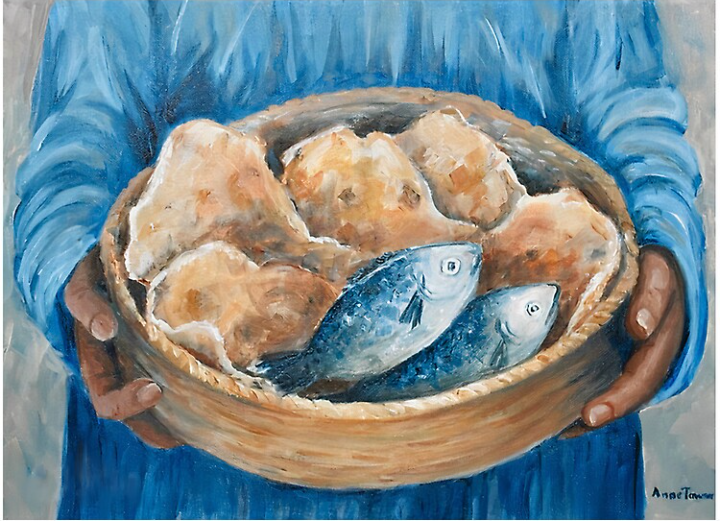

JE UNAFAHAMU KIASI CHA VIKAPU VIVYOBAKI BAADA YA YESU KULISHA WATU 5000?

Marko-6:42-43
"Wakala wote wakashiba...Wakaokota vipande vilivyomegwa vya kuweza kujaza vikapu kumi na viwili; na vipande vya samaki pia."
Kama Mungu aliweza kulisha makutano zaidi ya 5000, na kwako pia anaweza kufanya, Omba kwake, amini (hata kidogo) naye atakupatia hitaji la Moyo wako.
JE, UNAMFAHAMU BINADAMU ALIYEISHI MIAKA MINGI?
Mwanzo 5:27 Siku zote za Methusela ni miaka mia kenda na sitini na kenda, akafa.
Miongoni Mwa ahadi alizotoa Mungu kwa Wanadamu ni pamoja na kuishi miaka mingi hapa duniani japokuwa tunaweza tusiishi miaka mingi kama Wazee wa zamani lakini kila mtu humpa kama anavyostahili na zaidi anasisitiza,Kutoka 20:12Waheshimu baba yako na mama yako; siku zako zipate kuwa nyingi katika nchi upewayo na BWANA, Mungu wako.
Jambo moja na muhimu tunalopaswa kukumbuka ni kwamba sisi wenyeji wetu siyo wa hapa duniani...Wafilipi 3:20 "Kwa maana sisi, wenyeji wetu uko mbinguni; kutoka huko tena tunamtazamia Mwokozi, Bwana Yesu Kristo."
NIFANYE NINI? NINAPOTENDA DHAMBI.
1 John 2:1-2 "Watoto wangu wadogo, nawaandikia haya ili kwamba msitende dhambi. Na kama mtu akitenda dhambi tunaye Mwombezi kwa Baba, Yesu Kristo mwenye haki,...naye ndiye kipatanisho kwa dhambi zetu; wala si kwa dhambi zetu tu, bali na kwa dhambi za ulimwengu wote.
Tunapotenda dhambi Neno la Mungu linatujulisha kwamba tunapaswa kumwomba Yesu Kristo pekee ndiye mwenye uwezo wa kutusamehe dhambi zetu na hakuna mtu yeyote ambaye akipelekewa dhambi zetu atatusaidia tupate msamaha isipokuwa kwa njia ya kwenda kwa Kristo pekee kwa sababu yeye pekee ndiye Kuhani na mpatanishi wetu na Mungu na hakuna binadamu anayeweza kuchukua nafasi ya Kristo.
Soma pia: Waebrania 8:1,9:11
JE UNAUTUMIAJE UHURU WAKO?
"Nanyi kama mkiona ni vibaya kumtumikia Bwana, chagueni hivi leo mtakayemtumikia; kwamba ni miungu ile ambayo baba zenu waliitumikia ng'ambo ya Mto, au kwamba ni miungu ya wale Waamori ambao mnakaa katika nchi yao; lakini mimi na nyumba yangu tutamtumikia Bwana” Yoshua 24:15
Mungu aliwaagiza wazazi wetu wa kwanza kuhusu mti wa ujuzi, na walikuwa na taarifa kamili kuhusiana na kuanguka kwa Shetani, na hatari ya kusikiliza mapendekezo yake. Hakuwanyima uwezo wa kula tunda lililokatazwa. Aliwaacha wakiwa mawakala wenye hiari ya kuamini neno lake, kuzitii amri zake, na kuishi, au kumwamini yule mjaribu, kuasi, na kuangamia.
Wazazi wetu wa awali walichagua kumsikiliza na kumwamini nyoka ambaye ndiye shetani na hivyo kupelekea dhambi kuingia katika ulimwengu huu. Je, uchaguzi wako ni upi ndugu yangu?
JE, WAJUA KUWA KUNA VIUMBE WENGINE KATIKA SAYARI ZINGINE?

Bwana alinionyesha malimwengu mengine. Nilipewa mabawa, na malaika akaniongoza kutoka mjini kwenda Mahali penye kung’aa na utukufu. Majani ya Mahali pale yalikuwa ni yenye kustawi, na ndege wa waliimba wimbo mtamu.
Wakazi wa Mahali pale walikuwa wa rika zote: walikuwa waungwana, Hodari na wakupendeza. Walikuwa na mwonekano halisi wa Yesu na nyuso zao ziling’aa kwa furaha takatifu zikionyesha uhuru na furaha ya Mahalo pale. Nilimuuliza mmoja wa hao kwa nini walikuwa wakipendeza sana kuliko wakazi wa dunia. Alinijibu kwamba,
“tunaishi kabisa kwa kutii amri za Mungu, na hatujawai kuanguka kwa kutokutii, kama wale wakazi wa dunia.”
EW 39.3
JE, UNAZIFAHAMU KANUNI KUU ZA AFYA?

KANUNI ZA KUWA NA AFYA BORA
1. Nutrition (Chakula): Kula chakula bora na lishe kamili yenye matunda, mboga, nafaka, protini, na mafuta yenye afya.
2. Exercise (Mazoezi): Kufanya mazoezi mara kwa mara ili kuimarisha mwili, kudumisha uzito wa mwili wenye afya, na kuboresha ustawi wa mwili.
3. Water (Maji): Kunywa maji ya kutosha ili kuweka mwili unyevunyevu na kusaidia katika mchakato wa kimetaboliki.
4. Sunlight (Miali ya Jua): Kupata miale ya jua kwa kiasi sahihi ili kusaidia mwili kutengeneza vitamini D na kuboresha afya ya ngozi.
5. Temperance (Kiasi): Kudhibiti matumizi ya vitu vinavyoathiri afya kama vile tumbaku, pombe, na vyakula vyenye sukari nyingi.
6. Air (Hewa safi): Kupumua hewa safi na kuepuka uchafuzi ili kudumisha afya ya mapafu na mfumo wa kupumua.
7. Rest (Mapumziko): Kama Mungu alivyostarehe na akaitakasa siku ya sabato na kuifanya kuwa siku takatifu ya kupumzika baada shughuli za wiki zima akiiweka ili itukumbushe kuwa Mungu ndiye Muumbaji wa viumbe wote na alipomaliza kazi ya uumbaji akaibarikia na kuitakasa siku ya sabatou . Pia vilevile katika shughuli zetu za kila siku (ndani ya siku sita za kazi) tunapaswa Kupata usingizi wa kutosha ili mwili upate nafuu, kukarabati tishu, na kusaidia katika kazi za kimetaboliki.
8. Trust in God (Kuamini Nguvu ya Mungu): Kuwa na imani katika nguvu ya Mungu aliye Muumbaji na mkombozi wa maisha yetu naye ataboresha maisha yetu ya kiakili na kiroho